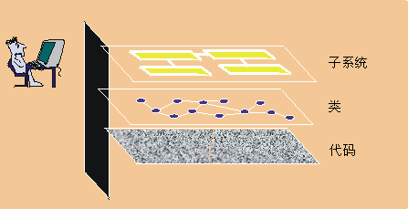

| 可视建模 |
 |
|
| 相关元素 |
|---|
|
 可视建模提高了抽象的程度 什么是可视建模？可视建模是指使用语义丰富的图形和文本设计表示法来捕获软件设计。表示法（例如 UML）允许提高抽象的程度，同时保持严格的语法和语义。 这样，它就改进了设计团队在设计成形和复审时的沟通情况，允许读者理解该设计，并且它为实施奠定了明确的基础。 我们为什么建模？模型是简化了的系统视图。它从特定的角度显示系统的基本元素，并隐藏非基本细节。模型可以下列方式提供帮助： 协助理解复杂的系统模型的重要性随着系统的复杂程度而增加。例如，造一个狗窝并不需要什么计划。但是，当一个狗窝发展为房屋，然后发展为摩天大厦时，对计划的需求就比较明显了。 类似的，由一个人在几天内构建的小应用程序可能在整体上比较容易理解。但是，对于一个具有数万行源代码（SLOC）的电子商务系统或具有数十万 SLOC 的空中交通控制系统，一个人就不那么容易理解了。构造模型使开发人员可以关注全局，理解组件之间如何交互，并确定致命的缺陷。 模型的一些示例有：
建模很重要，因为建模有助于团队设想、构造和记录系统的结构和行为，而不会被复杂性迷失方向。 以较低成本探索和比较设计备用方案可以较低的成本创建和修改简单的模型，以探索设计备用方案。在投资到昂贵的代码开发之前，其他开发人员可能会捕获到并复审有创新的想法。如果可视建模与迭代开发结合起来，会有助于开发人员评估设计变更并将这些变更传达给整个开发团队。 形成实施的基础今天，许多项目都采用面向对象编程语言来获取可重用、允许更改而且稳定的系统。要实现这些优点，更重要的是在设计中使用对象技术。Rational Unified Process（RUP）生成一个面向对象设计模型，这是实施的基础。 在适当工具的支持下，可以使用设计模型生成一组初始代码以供实施。这称为“正向设计”或“代码生成”。也可以增强设计模型，以包括足够的信息来构建系统。 还可以应用逆向工程，根据现有的实施来生成设计模型。这可以用于评估现有的实施。 “双向设计”结合了正向设计和反向设计的技术，确保设计和代码一致。与迭代式流程和合适的工具相结合，双向设计使得在每次迭代期内设计和代码可以同步化。 精确地捕获需求构建系统之前，捕获需求是至关重要的。使用严谨明确的模型指定需求，有助于确保所有项目干系人都能了解需求并就此达成一致意见。 如果一个模型将系统的外部行为与实施分离开来，就可以帮助您专注于系统的预想用途，而不会陷入实施细节中。 明确地传达决策RUP 使用的统一建模语言（UML）是一种可应用于系统工程与业务工程的一致表示法。标准表示法有以下作用（请参阅 [BOO95]）：
UML 代表了对象技术行业软件建模方面最佳实践的汇总。有关 UML 的更多信息，请访问我们的 Web 站点 http://www-306.ibm.com/software/rational/uml/。 |
© Copyright IBM Corp. 1987, 2006. All Rights Reserved. |